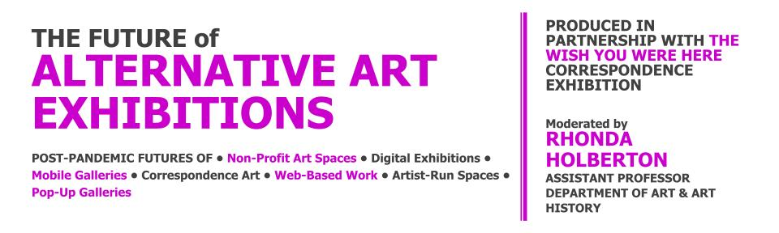

Students from across disciplines as well as the greater San Jose Public are invited to attend a series of workshops to help translate their personal experiences of living/working in San Jose into visual form that can be adapted into a postcard format. The workshops will culminate in two design contests that run from Nov 1 - Dec 1 2020 and a second round March 1 - May 14th 2021. The contests will return 1 winning kiosk design (for postcard distribution and return) and 14 postcard designs that will be printed in runs of 500 each.
In the Fall 2021, the Thompson Gallery will feature an exhibition of ‘correspondence art’ mailed to the gallery or dropped off to the kiosk. A digital exhibition of submitted designs (hosted by San Jose Story Map) will go live at the same time.
Wish You Were Here grew out of a series of brainstorming sessions with the Natalie & James Thompson Gallery and faculty from Art & Design departments at San Jose State University about ways to meaningfully connect the themes from the San Jose Story Map with the visual arts while sheltering in place. Wish You Were Here serves as way to collect multidisciplinary contributions of visual & text based work focused on placemaking in San Jose with sub-themes of:
14 winning postcard designs will be printed for an exhibition hosted by the Thompson Gallery in Spring 2021. Submission Instructions Here

May 7 6:00pm – 7:00pm
FREE & Open to the Public
Non-Profit Art Spaces • Mobile Galleries • NFTs • Networked Exhibitions • Artist-Run Spaces • Pop-Up Galleries
Moderated by, RHONDA HOLBERTON , Assistant Professor Department Of Art & Art History, SJSU
To ground the Wish You Were Here Correspondence Exhibition, San Jose State University’s College of Humanities & the Arts invite the public on an exploration of alternative exhibition formats. This panel features the directors of 5 Bay Area Alternative Art Exhibition Platforms in a discussion about the ways they have responded to Social Distancing during the Pandemic, as well as lasting impacts this time might have on platforms for art viewership and production.
DENA BEARD , Executive Director of The Lab, SF
MARCELLA FAUSTINI + CHARLIE LEESE , Co-Directors of CLOACA Projects, SF
CECI MOSS , Curator, author, educator, PhD and a founding director of the arts non-profit Gas
DOROTHY SANTOS , Executive Director, Processing Foundation
WADE WALLERSTIEN , Co-Director, TRANSFER Gallery & Founder, Silicon Valet
Produced In partnership with the Wish You Were Here Correspondence Design Contest & Exhibition & made possible by an Artistic Excellence Programming Grant From The College Of Humanities & The Arts at San Jose State University
After the workshops students are encouraged to submit their finished creative responses to several contests:
Be inspired! Get creative! Take away great ideas, tips, and techniques!
A series of interdisciplinary workshops will be held throughout the month of November 2020 to help students and San Jose Community create submissions for the Wish you Were Here Postcard Design Contest, San Jose Story Map Contest, and an accompanying exhibition at the Natalie & James Thompson Art Gallery at San Jose State University that will open in Spring 2021. For more information, please visit San Jose Story Map.
Start mapping your San Jose Story at one or more creative online workshops. A Zoom link will be sent to you after registration. Open to all SJSU students. No previous experience with tools or techniques is required.


The Wish You Were Here Visual Arts Workshops are sponsored by San José State University’s College of Humanities and the Arts and are organized in partnership with SJSU’s Natalie & James Thompson Gallery & the San Jose Story Map project.
Wed, Oct 28th, 6:30-8:45 pm
Hosted by Kerry Rohrmeier, PhD AICP (she / her), Assistant Professor, San José State University Department of Urban & Regional Planning
Registration (Eventbrite) Link: https://www.eventbrite.com/e/12540909497 *register by 10/23 for free access to ArcGIS Online software
Students will learn how to use ArcGIS Online Story Map tool to create cartographic narratives with their own stories, data, images, and videos. Every participant will create a map during the session. ArcGIS Online is cloud-based so it works well across devices and operating systems.
Wed Nov 4th 6:30-7:30pm
Hosted by Rhonda Holberton, Professor of Digital Media Art, Department of Art & Art History SJSU
Registration (Eventbrite): https://www.eventbrite.com/e/125408631593
In this workshop Participants will make 3D scans of an object that carries a personal story and learn how to make images of the scans using Photoshop. Imagine an archaeologist 300 years from now finds an object that reveals something unique and personal about you, what would that object be? What would the object tell about you? In the first half of the workshop students will learn how to make 3D scans using Photogrammetry Apps & the Kinect Sensor. In the second half of the workshop students will import their scans into Photoshop & learn how to layer and edit the scans to make digital images.
Thur Nov 5th, 6:30-7:30pm
Hosted by Diane Lee, Assistant Professor Department of Design, SJSU
Registration (Eventbrite): https://www.eventbrite.com/e/125404673755
In this 1-hour workshop, you are invited to join me on a (virtual) walk in Burbank (an unincorporated area in west San José) for a look at the vernacular typography in my neighborhood. Then, through a series of synchronous and asynchronous prompts, you will be
invited to survey the typographic landscape of the neighborhood where you are, and develop lettering for a postcard inspired by the typography you see. This lettering will become the basis for a collection of hyper-local risograph-printed postcards that may become entries in the San José Story Map Postcard Project and exhibition.
Thur Nov 12, 6:30-8:00pm
Hosted by Robin Lasser, Professor of Photography, Department of Art & Art History SJSU & Adrienne Defendi, MFA Candidate, Department of Art & Art History (Photography)
Registration (Eventbrite): https://www.eventbrite.com/e/125404346777
In this workshop you will be introduced to example postcard designs and learn how to use the postcard template. Snap a picture on your mobile device or professional camera of water features or related imagery in your neighborhood that gives visual form to your experiences with water or thoughts about humanity's relationship to the hydrosphere. Bring the photograph and some ideas about who/what you would send the postcard to & what you might write.
Wed Nov 18, 6:30 -7:30
Hosted by Kohar Scott, Assistant Professor Department of Design, SJSU
Registration (Eventbrite): https://www.eventbrite.com/e/125409728875
In this workshop students will learn design strategies to implement in the kiosk display design context. Students will have an opportunity to contribute to this San Jose Story Map project by designing a kiosk to display the postcard submissions. The winning kiosk designs could be selected for low quantity production and display postcards in the Spring 2021 at various San Jose locations.
Thur Nov 19, 6:30 -8:00
Hosted by Jayme Yen - University of Washington
Registration (Eventbrite): https://www.eventbrite.com/e/125560782681
In these disorienting times, our sense of space has both stretched and shrunk — we’re attending meetings, classes, and happy hours spanning multiple time zones, yet doing it from the same spot in front of our computers. Can we visualize these virtual gatherings as new forms of spaces? Can we think of Zoomspace as a place?
This one-hour workshop explores the time-space of the video call as a form of temporary physical community — a pop-up neighborhood. Inspired by deep mapping — an approach to understanding place through experience and narrative — participants will be led through a short series of activities to discover the hyperlocal contours of this workshop’s Zoom call. We will record our observations in a collaborative document, and collectively explore what it might mean to be fully present despite the distancing effects of screens.
Organized by the San Jose Story Map project in partnership with SJSU’s Center for Literary Arts.
Saturday, Nov 14th 10:00 -12:00 pm
Open to San Jose Community (free with registration)
Limited to 25 participants
Writer Robert Macfarlane suggests that there are “landscapes we bear with us in absentia, those places that live on in memory long after they have withdrawn in actuality, and such places — retreated to most often when we are most remote from them — are among the most important landscapes we possess.” At this remarkable moment in human history, impacted by a global pandemic, how we view “home” and our place in it takes on new significance. In this multi-genre workshop, join poet and writer Sally Ashton who will lead a series of in-class writing exercises to consider the “before now,” the “new now” of our disrupted lives, and re-envision the vital landscape of home. Consistent with the San Jose Story Map’s special theme – Covid Chronicles -- this generative workshop will also offer writers approaches to help shape your writing into a finished piece.
Friday Nov 6th, 10-12:00 pm
Open to all SJSU students (free with registration)
Limited to 25 participants
Consistent with the San Jose Story Map’s exploration of the city of San Jose, this generative workshop – “The Importance of Writing Realist Fiction Realistically” -- will focus on the essential components of writing "place.” To begin with, Malae will discuss his view that "writing place" is a moral matter, in which there are philosophical underpinnings as to how one properly captures a story. The workshop will then transition to exploring the truth of the maxim "show, not tell," even as it is an incomplete statement in the wider scope of written narrative. Peter Malae will answer your questions, and offer practical tips and techniques to shape your story. Malae's novel, What We Are, set entirely in the South Bay and primarily in San Jose, will be the creative reference point for the workshop.
Next Writing workshop coming in April 2021! For more information, please visit the San Jose Story Map contest webpage
Wish You Were Here exhibition workshops begin. This is a series of workshops that will help develop new skillsets for the Wish You Were Here exhibition.
A two part series writing workshop. First part for SJSU students. Second part open to the SJ community. Each workshop lead by a local writer.
Winners will be announced by Friday Dec 11th. Exhibition at Natalie & James Thompson Gallery Spring 2021
The Contest will open Monday Nov 2nd at 9:00 am. Please Check back for updates & links to application portal.
Wish You Were Here grew out of a series of brainstorming sessions with the Natalie & James Thompson Gallery and faculty from Art & Design departments at San Jose State University about ways to meaningfully connect the themes from the San Jose Story Map with the visual arts while sheltering in place.
The San Jose Story Map uses the power of stories to reveal San Jose in a new and different light. Contest entries must be original literary or artistic compositions relating to San Jose:
We welcome stories that explore San Jose’s hidden histories, unheard voices, diverse communities, and dynamic neighborhoods. A special, themed category called “Covid Chronicles” has been introduced for stories written while or about sheltering in a place in San Jose while Sheltering in Place. For contest details and submission guidelines see the San Jose Story Map website.
Led by Revathi Krishnaswamy (English & Comparative Literature, SJSU) & Rhonda Holberton (Digital Media Arts, SJSU), The San Jose Story Map project is part of SJSU’s Deep Humanities Initiative. This project is made possible with support from California Humanities, a non-profit partner of the National Endowment for the Humanities. Visit calhum.org.